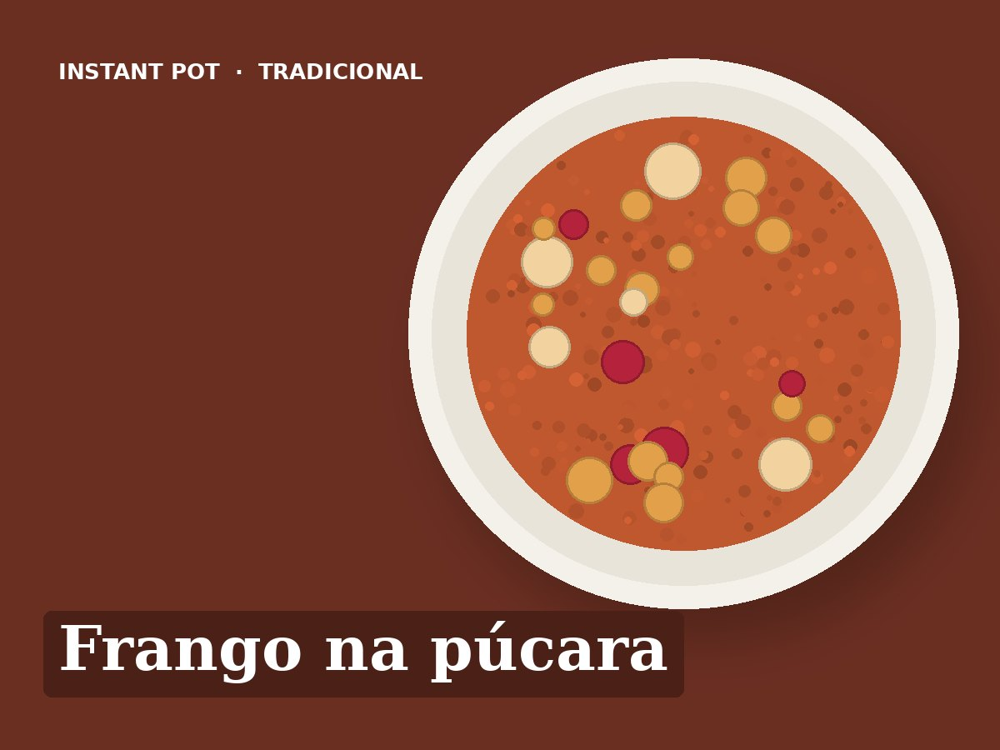

Frango na púcara
Ingredientes
- 800 g de pernas de frango sem pele
- 1 cebola
- 3 dentes de alho
- 2 tomates maduros
- 50 g de presunto em tiras
- 100 ml de vinho branco
- 50 ml de vinho do Porto
- 1 folha de louro
- 1 colher de chá de mostarda
- 1 colher de sopa de azeite
- Sal e pimenta q.b.
Preparação
- Saltear: azeite, presunto e cebola às rodelas, 3 minutos.
- Deitar o vinho branco e o vinho do Porto e raspar o fundo. Juntar a mostarda, o louro e o alho.
- Juntar o frango temperado com sal e pimenta e o tomate em pedaços por cima.
- Pressão alta, 10 minutos. Libertação natural 5 minutos.
- Servir com batata cozida ou arroz.